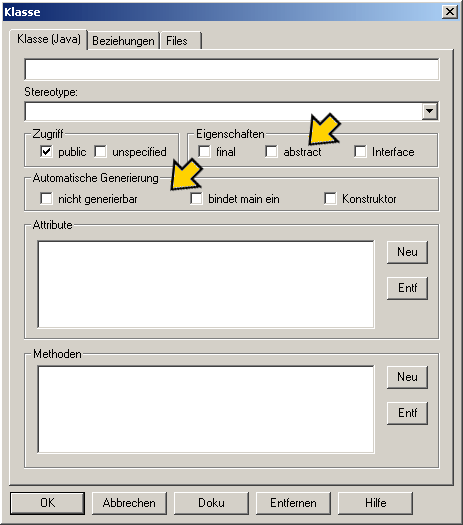
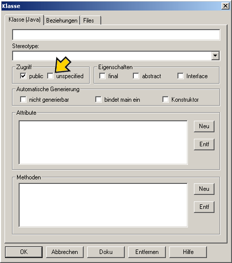
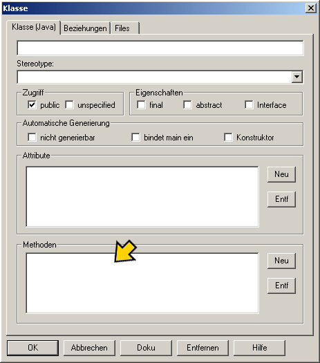
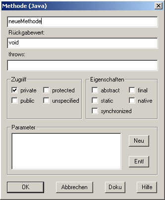

Klassennamen vergeben |
|
 |
Um eine Klasse eindeutig identifizieren
zu können, müssen Sie sie benennen.
Unsere erste Klasse nennen wir "Mädchen". Tragen Sie dazu jetzt in das Feld "Name" einfach "Mädchen" ein und schon haben wir einen Namen vergeben. Ein Tip: Nehmen Sie grundsätzlich sprechende Namen für Klassen , Methoden, usw. damit Sie sich später besser orientieren können und auch jemand, der sich nicht in Ihrem Programm auskennt damit arbeiten kann. |
Klasseneigenschaften |
|
|  |
Es gibt in den verschiedenen Programmiersprachen einige Besonderheiten, die eine
Klasse haben kann. So beinhalten manche
Klassen einen Programmteil,
der sich "main" nennt, andere sind "abstract" oder "final" andere wiederum sind "Interfaces".
Diese Begriffe sollen jedoch an dieser Stelle nicht erklärt werden. Zurück zu unserer Klasse "Mädchen". Sie soll "abstract" sein. Deshalb haken wir das Kästchen vor "abstract" an. "Abstract" bedeutet, dass es von dieser Klasse keine weiteren Instanzen gibt und ihre Methoden in vererbten Klassen überschrieben werden. |
Zugriffsspezifikationen |
|
|  |
Wie in anderen Programmiersprachen auch, gibt es die Möglichkeit, Zugriffskontrollatribute
zu definieren. Dies geschieht ganz einfach durch einen kleinen Klick in das entsprechende Feld.
Grundsätzlich geht man so vor, dass man die Zugriffe möglichst eng beschränkt und wirklich nur so
zugegriffen werden kann, wie nötig ist. Nicht jede Klasse
oder Methode sollte "public" sein. Es sollte also vorher gut
überlegt werden, welchen Zugriff man erteilt. Um unsere Klasse "Mädchen" allen zugänglich zu machen, definieren wir sie als "public". Klicken sie dazu in das entsprechende Feld. |
Methoden |
|
|  |
Da die Klasse "Mädchen"eine abstrakte
Klasse ist, gibt es keine Attribute. Jedoch gibt es
Methoden, die in den vererbten
Klassen überschrieben werden.
Methoden sind die Möglichkeiten eines Objektes aktiv zu sein.
So kann zum Beispiel ein Telefon läuten, ein Auto kann hupen und fahren usw..
Diese Fähigkeiten nennen wir Methoden. Unsere Objekte der Klasse "Mädchen" können reden und zählen. Diese Methoden werden wir nun bauen, indem wir auf "Neu" klicken. Es erscheint der Methode-Dialog. |
|  | Hier müssen Sie nun einen Namen für Ihre erste Methode angeben. In unsrem Beispiel nennen wir sie "reden" (Achtung! Methoden werden klein geschieben!). Auch hier kreuzen wir als Zugriffsspezifikation "public" an. Ein Klick auf "Ok" beendet den Methodendialog. Als nächstes erzeugen wir noch eine public Methode namens "zaehlen". Damit haben Sie Ihre erste Klasse erstellt. Ein abschliessender Klick auf "OK" bewirkt, dass die Klasse als UML-Element im Modell-Fenster angezeigt wird. |